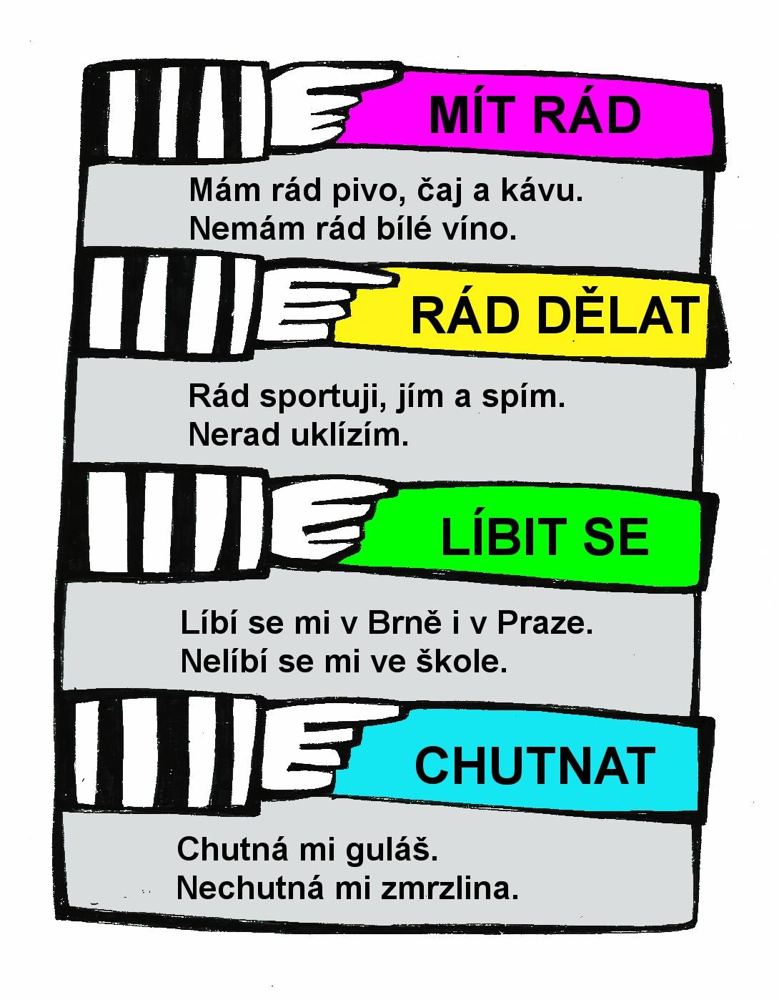
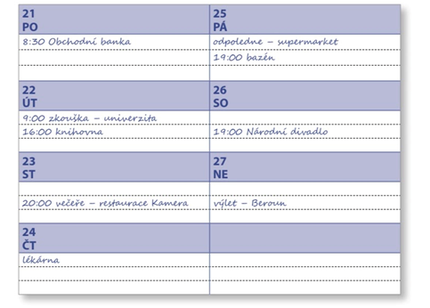

The topic of today's lecture is “Modální slovesa”. In Czech: “want”, “can”, “should/have to” and “dare”. Today we will also talk about how to say I like/dislike it.Well, let's get started!
Important! Conjugation occurs in the third group of verbs.
já - můžu / mohu
ty - můžeš
on / ona / ono - může
my - můžeme
vy - můžete
oni - můžou (mohou)
To be obliged/Must - muset
Important! Conjugation occurs in the second group of verbs.
já - musím
ty - musíš
on / ona / ono - musí
my - musíme
vy - musíte
oni - musí (musejí)
Be allowed to / May - smět
Important! Conjugation occurs in the second group of verbs.
já - smím
ty - smíš/h5>
on / ona / ono - smí
my - smíme
vy - smíte
oni - smějí
Frequent mistakes made by students:
Muset + sloveso - is a direct MUST
Musíš si obléknout čepici - You must wear a hat.
Mít + sloveso - is more like advice (SHOULD).
Máš si obléknout čepici - You should put on a hat.
How do you translate “I shouldn’t have gone to bed late? ”
1) Nemusel jsem jít spát pozdě.
2) Neměl jsem jít spát pozdě.
3) Nesměl jsem jít spát pozdě.
Now let's translate :)
1) I didn't HAVE to go to bed late.
2) I shouldn’t have gone to bed late.
3) I couldn’t go to bed late.
The second one makes sense. I hope that based on this example, you will not make mistakes.
Practice Questions
1) Chcete jít k nám na návštěvu?
2) Musíte výborně mluvit španělsky?
3) Smíte jíst tučné (fat) jídlo?
4) Chceš se naučit jezdit na kole?
5) Můžeš pro mě něco udělat?
6) Chce váš kamarád mluvit hezky česky?
7) What is your hobby?
8) Chtějí kamarádky číst zajímavou knihu?
9) Musíme chodit 10 kilometrů každý den?
10) Smí studenti chodit pozdě na hodiny češtiny?
11) Můžeme cestovat vlakem do Ameriky?
12) Chce tvůj soused běhat s námi ráno?
13) Můžou navštívit dnes (today) lékaře?
14) Smíme jít do kina?
15) Můžete přijít?
Addition
I would like … .Could I … . Chtěla bych….Mohla bych….
VYJÁDŘENÍ POCITŮ

In Czech there are four ways to say I like/dislike
Mít rád - to like it (on an ongoing basis)
AFTER Mít rád we use ONLY NOUNS
já - mám rád
ty - máš rád
on / ona / ono - má rád
my - máme rádi
vy - máte rádi/ máte rád/ máte ráda
oni - mají rádi
Líbit se - to like it (visually)
AFTER líbit se we use ONLY NOUNS. And we do not use it with food and drinks. Do you like VISUAL
já - líbím se
ty - líbíš se mi
on / ona / ono - se mi líbí
my - love se
vy—libite se
oni - se mi libi
Chutnat - to like the taste
já
ty
on / ona / ono - mi chutná
my
vy
oni - hranolky mi chutnají
Rád + sloveso - example (I work with pleasure/I like working)
WE USE THIS CONSTRUCTION WITH VERBS in the personal form (never used with a verb in the infinitive form!)
Sloveso + rád / ráda / rádi
Rád/ráda studuju (já), rád/ráda pracuješ (ty), rádi mluvíme (my), etc.
A common mistake is to use the form rád with an infinitive, for example saying "rád pracovat". This is incorrect, because. the phrase becomes inconsistent "I enjoy working." It would be correct to say “I enjoy working”: rád /ráda pracuju.
Complete tasks 1 to 7.
1. Preložte.
2. Ve větách jsou popsané situace a vy musíte dát radu, pomocí modálních sloves “muset” a “potřebovat”. V závorkách máte pomůcku, komu přesně se stála ta situace.The sentences describe situations you must give advice using the verbs “should” and “need”. In parentheses it is written who exactly this situation happened to. Vzor: Rozlila jsem vodu (já). Musiš to uklidit.
3. Najděte v textu věty, kde jsou modální slovesa a zkuste je přepsat bez nich.Find sentences in the text that contain modal verbs and rewrite these sentences without them. Vzor: Chci koupit auto. -> Koupím auto.
Lucie tento týden neučí. Chce jet na chalupu rodičů. Musí tam ale být bez manžela Norberta, protože Norbert potřebuje pracovat doma. Co tam Lucie sama celý týden dělá? Ráno vstává v 9 hodin, potom dělá snídani. Snídá kávu, rohlíky a sýr. Dopoledne odpočívá, poslouchá oblíbená cédéčka a čte historické romány. V poledne vaří něco dobreho. Odpoledne chvíli sportuje. Běhá sky plave. Taky ráda sedí u chalupy a dívá se na přírodu. Večer už moc nevaří. Večeří jen zeleninový salát. Potom čeká na telefon od Norberta, pak asi hodinu pracuje, opravuje testy studentů a chatuje. Pracuje jenom málo, protože chce tento týden hodně odpočívat a dlouho spát.
4. Pracujte podle vzoru. Odpovězte.Vzor: V pondělí v 8:30 musí jít Tomáš do Obchodní banky. V pondělí odpoledne může sportovat.
 5. Pracujte podle vzoru. Dokončete věty pomocí sloves.Follow the example. Complete the sentences with verbs. Vzor: Dnes chci odpočívat .
6. Doplňte správné formy slovesa “umět” a slovesa “moct”.
7. Poslechněte si nahrávku a vypište všechna modální slovesa, která uslyšíte.Listen to the audio and write down all the modal verbs you hear.